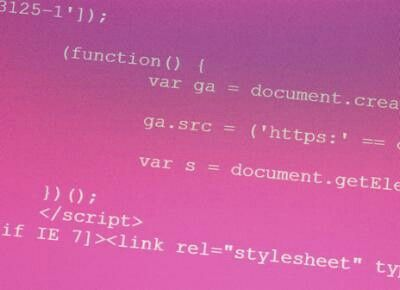

Nesta seção, aprofundamos a relevância de selecionar metodologias apropriadas para o desenvolvimento de programas em ambientes locais. Abordamos métodos e práticas eficazes, fornecemos exemplos práticos e discutimos a adaptação às demandas específicas de cada local. Além disso, destacamos as tendências atuais nesse cenário. Ao concluir esta seção, você terá uma compreensão sólida para tomar decisões informadas ao escolher a abordagem certa para seus projetos locais.
Nesta seção, mergulharemos na fascinante jornada da evolução das metodologias de programação ao longo do tempo. Vamos explorar como essas abordagens se desenvolveram, desde os primórdios da programação até as metodologias mais modernas. Ao compreender essa evolução, poderemos analisar as vantagens e desvantagens das metodologias em diversos contextos. Discutiremos como cada metodologia aborda os desafios específicos da programação e como escolher a melhor estratégia para otimizar o desenvolvimento de software.
Nesta fase, aprofundaremos as abordagens para a criação de programas interativos e dinâmicos, explorando conceitos fundamentais, ferramentas populares e melhores práticas. Abordaremos estratégias essenciais para desenvolver interfaces de usuário envolventes e funcionais. Ao concluir esta seção, você obterá insights valiosos sobre como criar programas interativos que proporcionam uma experiência de usuário excepcional, mesmo quando o espaço é limitado.